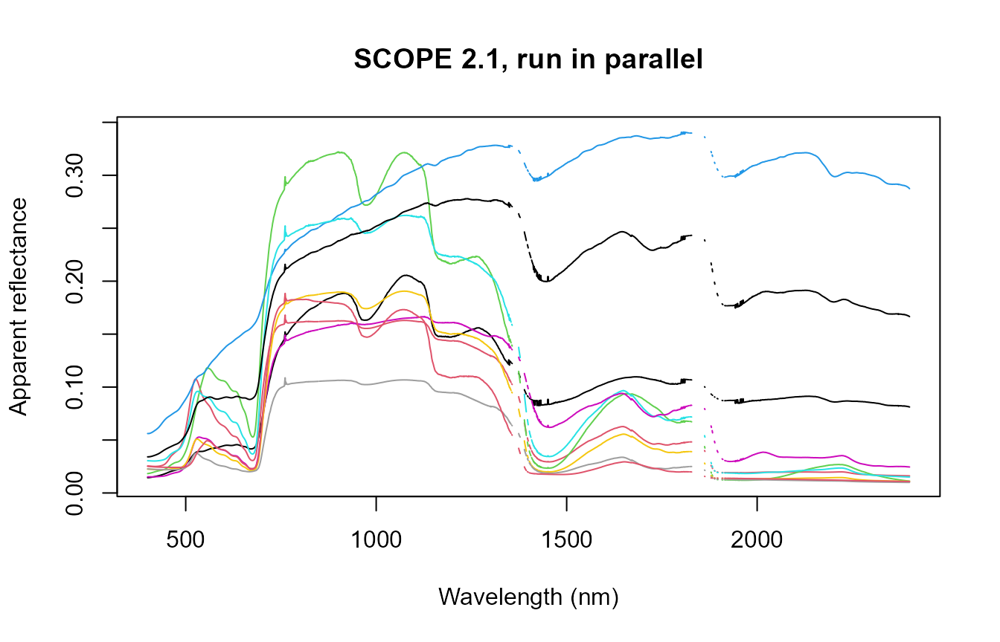

06. Large-Scale and Parallel SCOPE Runs
t06-parallel-scope-runs.Rmdget.SCOPE() is far more expensive per call than
foursail() (ToolsRTM Tutorial 06) – dominated by the
iterative energy-balance solve (Tutorial 03), roughly 0.1-0.3s per call
vs. ~2ms for a plain optical simulation. At LUT sizes of hundreds to
thousands of rows, that difference is the whole reason
get.SCOPE.parallel() exists as a separate entry point
rather than just looping.
1. Sequential timing baseline
path_input <- system.file("input", package = "SCOPEinR")
table.with.opts <- read.table(file.path(path_input, "setoptions.csv"), header = TRUE, sep = ",")
inputLUT <- read.table(file.path(path_input, "inputs_SCOPE.csv"), header = TRUE, sep = ",")
n_samples <- 30
LUT <- getLUT.SCOPE(inputLUT = inputLUT, nLUT = n_samples, setseed = 1)
t_seq <- system.time({
db.sim.seq <- get.SCOPE(LUT = LUT, n.LUT = n_samples, options.SCOPE = table.with.opts,
optipar = SCOPEinR::optipar2021.Pro.CX, leaf.model = "fluspect-CX",
canopy.model = "fourSAIL", get.outputs = "ALL", get.plots = FALSE)
})
cat("Sequential:", round(t_seq[["elapsed"]], 1), "s for", n_samples, "SCOPE runs (",
round(1000 * t_seq[["elapsed"]] / n_samples, 0), "ms/run)\n")
#> Sequential: 17.6 s for 30 SCOPE runs ( 586 ms/run)2. get.SCOPE.parallel()
# CRAN check machines cap parallel workers at 2; respect that limit so this
# vignette rebuilds cleanly under R CMD check --as-cran.
vignette.cores <- if (nzchar(Sys.getenv("_R_CHECK_LIMIT_CORES_"))) 2L else 3L
t_par <- system.time({
db.sims <- SCOPEinR::get.SCOPE.parallel(
LUT = LUT, options.SCOPE = table.with.opts, optipar = SCOPEinR::optipar2021.Pro.CX,
leaf.model = "fluspect-CX", canopy.model = "fourSAIL", parallel = TRUE,
get.outputs = "ALL", get.plots = FALSE, get.csv = FALSE, n.cores = vignette.cores)
})
#> Total simulations: 30
#> Total execution time: 14.3457
cat("Parallel (", vignette.cores, "cores):", round(t_par[["elapsed"]], 1), "s for", n_samples, "SCOPE runs\n")
#> Parallel ( 3 cores): 15.1 s for 30 SCOPE runs
cat("Speedup:", round(t_seq[["elapsed"]] / t_par[["elapsed"]], 2), "x\n")
#> Speedup: 1.17 x
wave_ <- db.sims[[1]]$data.spectral$wlS[1:2001]
matrix.reflapp <- sapply(seq_along(db.sims), function(i) db.sims[[i]]$data.rad$reflapp[1:2001])
ncols <- sample(ncol(matrix.reflapp), min(10, n_samples))
matplot(wave_, matrix.reflapp[, ncols], type = "l", lty = 1, col = seq_along(ncols),
xlab = "Wavelength (nm)", ylab = "Apparent reflectance", main = "SCOPE 2.1, run in parallel")
3. Exporting simulation outputs
For a real production run, get.SCOPE.outputs() saves
everything to disk rather than keeping it all in memory:
path.outs <- "outs/"
get.SCOPE.outputs(data.sim = db.sims, N.sims = n_samples, LUT = inputLUT,
path.out = path.outs,
get.more.inputs = c("refl", "lidf", "LIDFb", "Ft_Fo", "rdo"),
get.plots = TRUE)get.more.inputs controls which extra fields get pulled
out of each run’s nested output list and saved as flat columns –
reflectance, LIDF angles, the LIDFb parameter, the Ft/Fo
fluorescence-efficiency ratio, and the rdo BRDF component
(Tutorial 02) in this example.